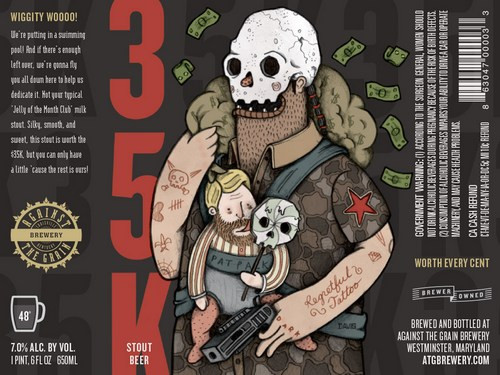
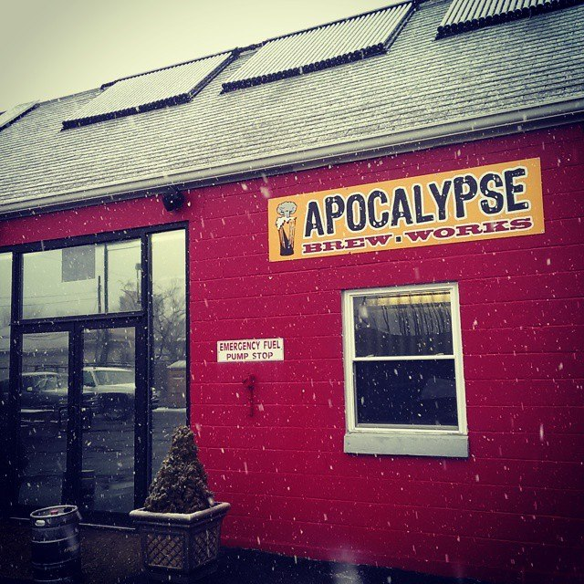
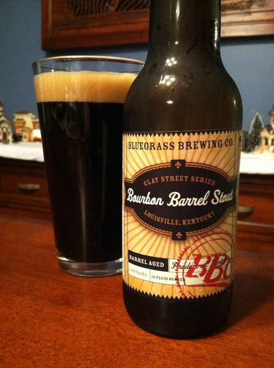
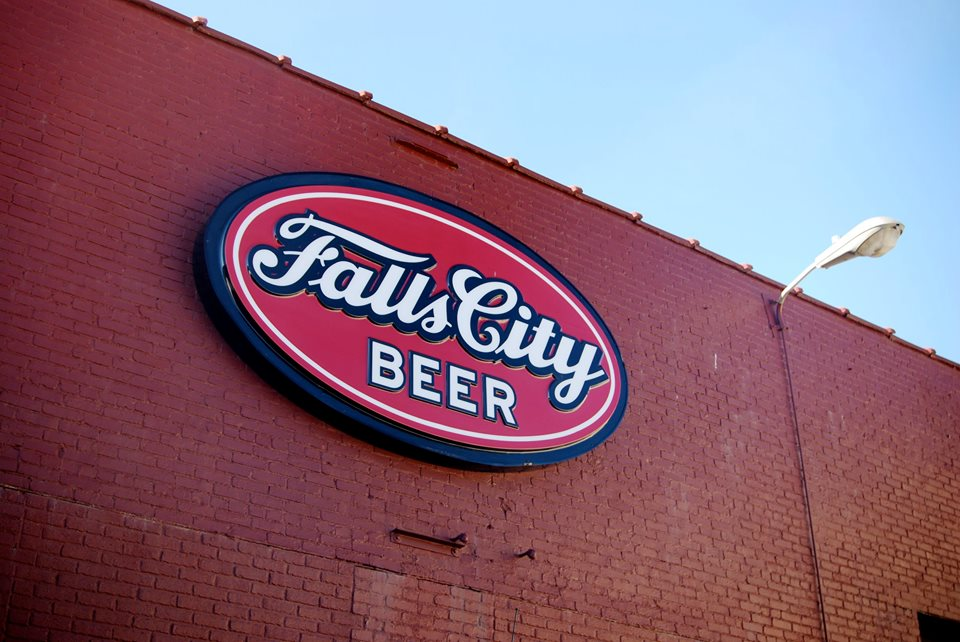
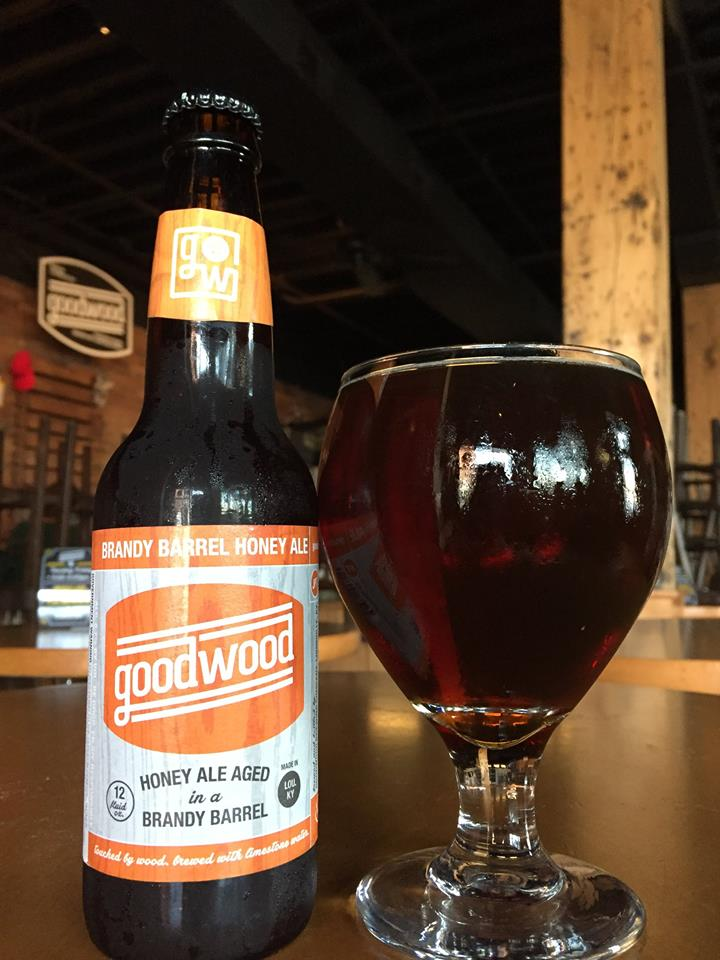

Against The Grain is an up and coming brewery and pubhouse. They are known for their unique beer artwork. Located right next to the Riverbats stadium the brewpub is an excellent way to end a night at the ball game.

Apocalypse Brew Works opened up in 2012 and specializes in small-batch fresh craft beer. Since then they have slowly been making more and more appearances in local Louisville bars with no signs of slowing down.

BBC is the oldest Microbrewery/Prewpub in Louisville. It has three different locations in Louisville. The Bourbon Barrel Stout is incredibly popular and sought after even outside of Louisville.

Falls City opened originally in 1905 and was a Louisville staple for years before going under in 1978. Over 30 years later in 2010 the brand was revived. It's signature Falls City Pale Ale is a classic but they aren't stuck in the past with new beers coming out constantly.

Goodwood is a production brewery in downtown Louisville. It is dedicated to making beer that has been touched by wood. They use reclaimed oak casks once used to house bourbon, red wine, and brandy or seasoned on oak, poplar or ash.
